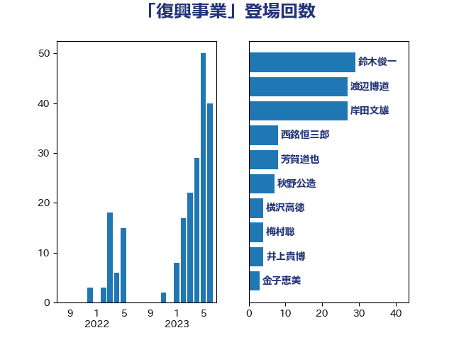

単語「復興事業」

| 鈴木俊一 | 自由民主党 | 29 回 |
| 渡辺博道 | 自由民主党 | 27 回 |
| 岸田文雄 | 自由民主党 | 27 回 |
| 西銘恒三郎 | 自由民主党 | 8 回 |
| 芳賀道也 | 国民民主党 | 8 回 |
| 秋野公造 | 公明党 | 7 回 |
| 横沢高徳 | 立憲民主党 | 4 回 |
| 梅村聡 | 日本維新の会 | 4 回 |
| 井上貴博 | 自由民主党 | 4 回 |
| 金子恵美 | 立憲民主党 | 3 回 |
| 金子俊平 | 自由民主党 | 3 回 |
| 石井苗子 | 日本維新の会 | 3 回 |
| 柴愼一 | 立憲民主党 | 3 回 |
| 鈴木庸介 | 立憲民主党 | 2 回 |
| 重徳和彦 | 立憲民主党 | 2 回 |
| 紙智子 | 日本共産党 | 2 回 |
| 石井啓一 | 公明党 | 2 回 |
| 横山信一 | 公明党 | 2 回 |
| 小沢雅仁 | 立憲民主党 | 2 回 |
| 堂込麻紀子 | 無所属 | 2 回 |
| 和田政宗 | 自由民主党 | 2 回 |
| 井林辰憲 | 自由民主党 | 2 回 |
| 上田勇 | 公明党 | 2 回 |
| おおつき紅葉 | 立憲民主党 | 2 回 |
| 齋藤健 | 自由民主党 | 1 回 |
| 階猛 | 立憲民主党 | 1 回 |
| 赤木正幸 | 日本維新の会 | 1 回 |
| 羽田次郎 | 立憲民主党 | 1 回 |
| 田村貴昭 | 日本共産党 | 1 回 |
| 櫻井周 | 立憲民主党 | 1 回 |
| 松本剛明 | 自由民主党 | 1 回 |
| 斉藤鉄夫 | 公明党 | 1 回 |
| 広瀬めぐみ | 自由民主党 | 1 回 |
| 山田賢司 | 自由民主党 | 1 回 |
| 尾崎正直 | 自由民主党 | 1 回 |
| 小島敏文 | 自由民主党 | 1 回 |
| 小倉將信 | 自由民主党 | 1 回 |
| 塚田一郎 | 自由民主党 | 1 回 |
| 勝部賢志 | 立憲民主党 | 1 回 |
| 住吉寛紀 | 日本維新の会 | 1 回 |
| 一谷勇一郎 | 日本維新の会 | 1 回 |